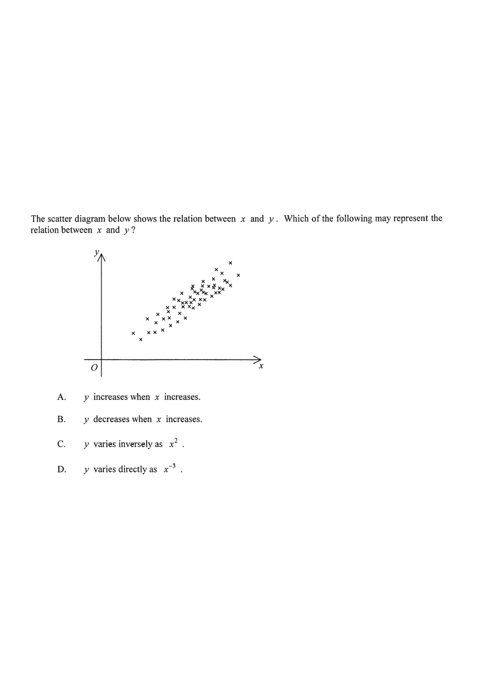

Drag the points? No — just scroll the solution ↓Trend: —
Data pointsAxesTrend line (step 3)Rejected options
[HKDSE 2013 Paper 2 — Q28] · Topic 15: Statistics
The scatter diagram below shows the relation between $x$ and $y$.
Which of the following may represent the relation between $x$ and $y$?
A. $y$ increases when $x$ increases.
B. $y$ decreases when $x$ increases.
C. $y$ varies inversely as $x^{2}$.
D. $y$ varies directly as $x^{3}$.

Figure (original exam diagram)
1Read the given diagram
The points are plotted with $x$ along the horizontal axis and $y$ along the vertical axis.
Looking at the cloud of points, we see the smallest $x$ values sit at the bottom-left,
and the largest $x$ values sit at the top-right.
Hint: ask "as I move right, do I move up or down?" — here it is up.
2Identify the direction of the relationship
Since the points rise from left to right, this is a positive association:
\[ x \uparrow \;\Longrightarrow\; y \uparrow \]
So $y$ increases
Positive Correlation\(r>0\ \text{means}\ x\uparrow\ \Rightarrow\ y\uparrow\)The points rise from left to right, so the two variables move in the same direction.
when $x$ increases.
Hint: A positive correlation means the two variables move in the same direction.
3Draw a line of best fit
Sketch an upward-sloping line through the middle of the points — the gradient is clearly positive.
A positive gradient means $y$ grows with $x$, matching the description in option A.
Hint: The best-fit line here is straight-ish, so a simple "increases / decreases" statement fits best.
4Test option B
B: $y$ decreases when $x$ increases would need a downward-sloping cloud.
Our points slope upward, so B is ✗ wrong.
Hint: "decreases" = negative correlation = points fall left→right.
5Test option C
C
Inverse Variation\(y=\dfrac{k}{x^{2}}\qquad(k>0)\)For positive \\(x\\) an inverse relation makes \\(y\\) fall as \\(x\\) grows, contradicting the upward trend of these points.
: $y$ varies inversely as $x^{2}$ means $y = \dfrac{k}{x^{2}}$ ($k>0$).
As $x$ increases, $y$ would decrease — a falling curve.
This contradicts the upward trend, so C is ✗ wrong.
Hint: Inverse variation always gives a decreasing relationship for positive $x$.
6Test option D
D
Direct Variation\(y=kx^{3}\qquad(k>0)\)\\(y=kx^{3}\\) does rise with \\(x\\), but far too steeply for a band of points that is almost a straight strip.
: $y$ varies directly as $x^{3}$ means $y = kx^{3}$.
For $x$ increasing (positive side), $y$ does increase — but $x^{3}$ grows very rapidly,
producing a sharply curving, almost vertical tail. The points here lie roughly along a
straight band, so D is not the best description — it is ✗ not chosen.
Hint: With $y \propto x^{3}$, a small increase in $x$ causes a huge jump in $y$; the scatter does not show that.
7Conclusion
Only option A correctly describes what the scatter diagram shows:
$y$ increases when $x$ increases.
Hint: The key word in the question is "may" — choose the simplest statement consistent with the points.
Answer: A — $y$ increases when $x$ increases.
PRACTICESimilar question — try it yourself
Question. When \\(x=1,\ 2,\ 3,\ 4\\), the corresponding values of \\(y\\) are \\(2,\ 8,\ 18,\ 32\\). Which of the following may represent the relation between \\(x\\) and \\(y\\)? A. \\(y\\) varies directly as \\(x^{2}\\) \quad B. \\(y\\) varies inversely as \\(x^{2}\\) \quad C. \\(y\\) varies directly as \\(x^{3}\\) \quad D. \\(y\\) decreases when \\(x\\) increases
Show the worked solution
Step 1. Test direct variation with \\(x^{2}\\): \\(\dfrac{2}{1}=\dfrac{8}{4}=\dfrac{18}{9}=\dfrac{32}{16}=2\\), a constant ratio, so \\(y=2x^{2}\\).
Step 2. So \\(y\\) varies directly as \\(x^{2}\\) and option A fits all four pairs exactly.
Step 3. Test C: \\(\dfrac{y}{x^{3}}=2,\ 1,\ \tfrac{2}{3},\ \tfrac{1}{2}\\) is not constant, so \\(y\\) does not vary directly as \\(x^{3}\\).
Step 4. Test B and D: \\(y\\) rises from \\(2\\) to \\(32\\) as \\(x\\) increases, so neither an inverse relation nor a decreasing one is possible.
Answer: A \u2014 \\(y\\) varies directly as \\(x^{2}\\)